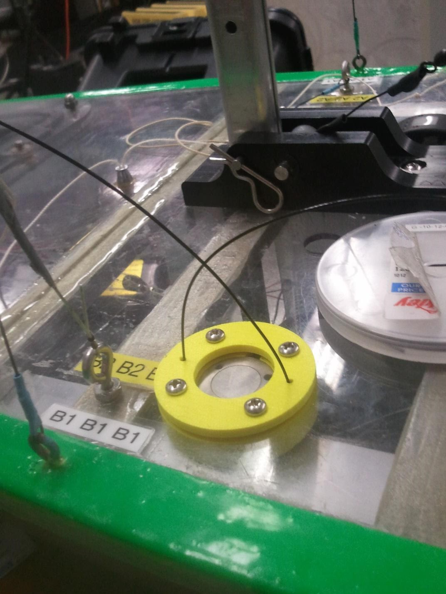

Comprised of ~18 students, Olin Robotic Sailing (ORS) seeks to marry ancient technology with the modern to launch an autonomous sailboat across the Atlantic Ocean. I am currently the Mechanical subteam coordinator, responsible for developing the mechanical aspect of The Enterprise, and mentoring four budding freshmen.
The Enterprise is a retrofitted Sunfish that will sail autonomously from Gloucester to Provincetown, a 40-mile voyage, in the spring. Add-ons to house the sail and rudder actuation systems, on-board power, and sensor suite will be mounted to the bow and stern of the boat. This is the first time the team has worked with a hull longer than 2 meters, let alone sail on the open seas - it's a work in progress!
Damn Yankee is a two-meter long, manufactured in-house boat. A peer and I were tasked with designing and implementing a more robust sail actuation system. The result was two belt-and-pulley Dynamixel-powered systems, one to control the jib and the other to control the main. (The jib and main are sails.) The new actuation system was a marked improvement from that of Blackbody Radiation, whose winch frequently tangled.
To effectively determine what to do, the boat's AI needs a constant stream of information, one piece of which is the amount of force wind is applying to the sails. To do this, I used Blackbody, the 2011-12 boat, as a test platform. I experimented with various ways of mounting a load cell, a sensor that measures applied force, eventually mounting it onto the deck and connecting it via the sheets, the cabling that connects the sails and mast to the rest of the boat.
